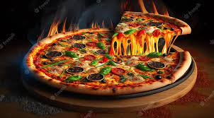
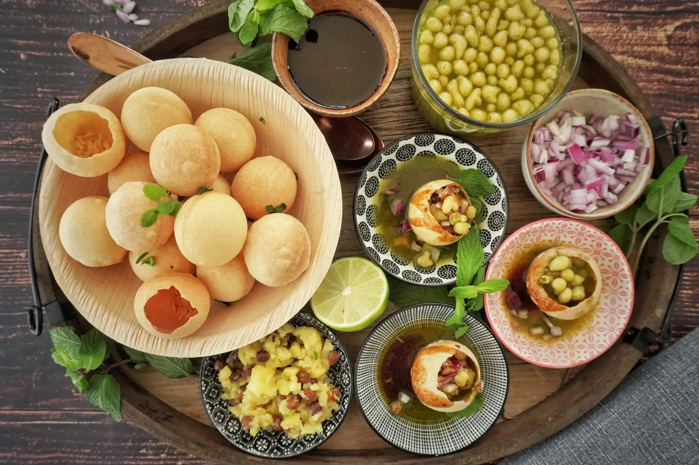
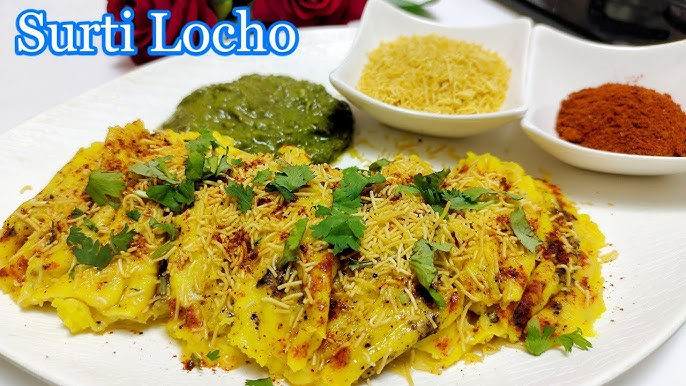
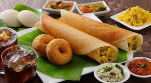

PIZZA:-
pizza, dish of Italian origin consisting of a flattened disk of bread dough topped with some combination of olive oil, oregano, tomato, olives, mozzarella or other cheese, and many other ingredients, baked quickly—usually, in a commercial setting, using a wood-fired oven heated to a very high temperature—and served hot.
One of the simplest and most traditional pizzas is the Margherita, which is topped with tomatoes or tomato sauce, mozzarella, and basil. Popular legend relates that it was named for Queen Margherita, wife of Umberto I, who was said to have liked its mild fresh flavour and to have also noted that its topping colours—green, white, and red—were those of the Italian flag.
The popularity of pizza in the United States began with the Italian community in New York City, where the Neapolitan pizza had an early influence. The first pizzeria appeared in New York City about the turn of the 20th century. After World War II the pizza industry boomed.

PANIPURI:-
Gol gappa (also known as pani puri) is a popular bite-size chaat consisting of a hollow, crispy-fried puffed ball that is filled with potato, chickpeas, onions, spices, and flavoured water, usually tamarind or mint, and popped into one's mouth whole.
The elements required for making home made golgappa are - crispy puri, a stuffing of your choice (soaked boondi, boiled potatoes, chickpeas and moong or ragda) and pani (teekha phudina pani and sweet imli pani). There are many other versions of pani too like lehsun ka pani, jaljeera, hing jeera pani.
The combination of different flavors and textures - crispy, soft, spicy, tangy, and sweet - is what makes Pani Puri so popular. It is also a very affordable snack and can be found in various parts of India, sold by street vendors and in restaurants.
While pani puri, which is in the category of South Asian food known as chaat, is most commonly enjoyed as a tea-time snack, in my household it's eaten for breakfast

LOCHO:-
Locho is a steamed Gujarati Farsan (Snack /Side Dish) that originated in Surat. It is made from gram flour. The dish derives its name from its loose consistency and irregular shape like dumplings. It is somewhat related to Khaman.
Locho means something fishy actually there is a interesting story behind it that once a chef by mistake added more water to the khaman batter so it turned out little bit more softer and mashy than regular one so he yelled," arre aa to locho thai gayo" and to hide his mistake, he served that dish along with the tasty ...
'Locho' in Gujarati actually means a mistake which explains why this dish is named so. The invention of Locho was actually a mistake but that mistake led to the creation of one of the most iconic dishes of Gujarat. Locho is best paired with fresh chopped onion, sev and mint chutney.

DOSA:-
A dosa is a thin savory pancake in South Indian cuisine made from a fermented batter of ground black lentils and rice. Dosas are served hot, often with chutney and sambar. Dosa is a signature dish in South India and Sri Lanka, and is popularly served in their respective restaurants around the world.
Dosa is a popular South Indian thin crepe made with fermented rice and lentil batter. History of dosa says they were made using only rice but with the passage of time, people started to add urad dal / black lentils to give texture and taste.
A dosa is South Indian, fermented crepe made from rice batter and black lentils. Masala Dosa, specifically, is when you stuff it with a lightly cooked filling of potatoes, fried onions and spices.
He poured the batter onto a pan and fried it to make the delicious dosa as we know it today. Legend has it that the name dosa comes from the Sanskrit word Dosha which means "sin".